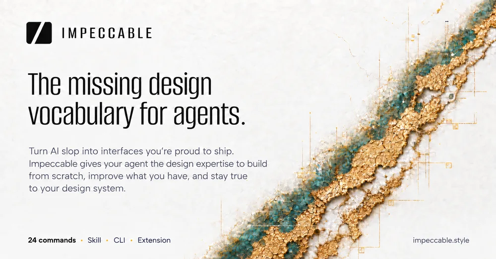

Impeccable
A style coach built into Claude Code and Cursor that stops AI-written pages from looking like every other AI-written page.
Type /impeccable audit on a page you built with an AI coding tool and it flags the tells that give it away as AI-made - the purple gradient, the overused font, cards stacked inside cards - then rewrites the page to fix them.

How does it work?
Every AI coding tool trained on the same SaaS templates, so the pages it writes for you all end up looking the same.
Inter font, a purple-to-blue gradient, cards stacked inside cards, gray text on a colored background, a rounded-square icon above every heading - on every project, no matter which AI wrote it.
You type a command inside the AI coding tool you already use.
/impeccable audit landing, /impeccable polish settings, or just /impeccable redo this hero section - typed into Claude Code, Cursor, GitHub Copilot, Codex or several other tools it plugs into.
The page or feature you point it at, plus a one-time setup file about your product.
The first time on a project, /impeccable init asks a few short questions and writes the answers to a PRODUCT.md file - who the page is for, its voice, its constraints - so later commands don't have to guess.
It checks the page against a fixed rulebook, then has the AI rewrite what fails.
- Runs 61 fixed checks for the tells above - no AI judgment needed for this part, so it can't be talked out of a real problem
- Adds the AI's own design judgment on top: hierarchy, clarity, whether the page feels right for its audience
- For visual work, opens the actual page in a browser, tries a few real variants, and looks at how each one renders
- Rewrites the page's real code to fix what it found, and updates the product and design notes so the next command stays consistent
On its own homepage example, an audit of a hotel website found 4 of the classic AI tells before a rewrite.
Working page code you can ship, not just advice.
- The page's code, rewritten in placeThe homepage's own example: cutting a page's script from 412 KB to 86 KB and its load time from 3.4 seconds to 1.1 seconds.
- A written record of your product and its design systemPRODUCT.md and DESIGN.md, so the next
/impeccablecommand on this project already knows the audience and the existing visual style. - A plain list of what it found and fixedThe homepage's own hotel-site example: 4 named tells, each with the fix it applied.
What changes for me?
Without it
- Ask any AI coding tool for a page and you tend to get the same look: Inter font, a purple gradient, and cards nested inside more cards - the tells that give away it was AI-made.
- Fixing that today means describing 'more premium' or 'less generic' in words and hoping the AI guesses right.
- Each new project starts from zero: the AI has no memory of your product's audience or the visual system you already settled on.
With it
- 61 fixed checks catch the classic tells automatically, before the AI's own taste even gets involved.
- One setup step writes down your product's audience and existing design system, so every later command builds on it instead of guessing.
- A live-browser mode lets the AI try real variants of one element and show you how each one actually renders, not just describe it.
How hard is it to try?
Effort
- In a terminal, inside your project folder, run
npx impeccable installand pick your AI coding tool (Claude Code, Cursor and others are all supported) when it asks. - Switch to that tool and type
/impeccable initonce - it asks a few short questions and remembers the answers for every command after. - Point it at a real page: type
/impeccable auditor/impeccable polishand the page's name, and read what it finds before you let it rewrite anything. See a worked example at the Neo Mirai case study.
What it takes on your computer
- Space on disk
- The install command itself is tiny (well under 1 MB). It downloads the real program once, the first time you use it - about 14 to 18 MB depending on whether you're on a Mac, Windows or Linux machine.
- Memory while it runs
- No separate figure to give: it runs inside the AI coding tool you already have open rather than as its own program, so it doesn't add a memory cost of its own.
- Runs on
- Mac, Windows or Linux. Works inside Claude Code, Cursor, GitHub Copilot, Codex CLI, Gemini CLI, Grok Build and several others. No graphics card needed - most of its checks (61 of them) run without calling an AI model at all.
Paste this into Claude Code. It runs your safety scan first, then a 10-minute test.
/skillspector https://github.com/pbakaus/impeccable If that scan passes: in a scratch project, run npx impeccable install and pick Claude Code, then run /impeccable init followed by /impeccable audit on any page in that project. Show me exactly what it flags. 10 minutes max, then stop and report back in plain English.
Should I?
Great if you...
- You're already asking Claude Code, Cursor or another AI tool to build or restyle pages and you're tired of them all looking the same
- You want a written record of your product and design system so future AI sessions stay on-brand instead of you re-explaining it every time
Skip it if...
- You don't use an AI coding tool at all - this installs into one, it isn't a design app on its own
- You want it to just decide for you: the maker has said flatly "there is no auto, and there will be no auto" - you review and approve every change
- You need a guarantee, not a checklist: it catches 61 known tells, not every bad design choice
Instead, you could look at
- Anthropic's frontend-design skillThe free official skill Impeccable itself started from - simpler, with fewer built-in checks.
- taste-skillA direct competitor on this week's Design & Branding board - same idea, different rulebook.
- ui-ux-pro-maxLeans toward a fixed playbook for whole screens rather than auditing what you already built.
Is it safe?
- Security advisories: 0GitHub's advisory list, checked Sep 27
- Searches for CVEs, vulnerabilities, malware and scams14 results read, including the national CVE database: nothing found
- Are the stars earned?71.8K stars, 54 contributors, 1.9K commits. findarepo's star check: looks organic
No advisories. The 14 flagged hits were unrelated Hacker News comments using the everyday word 'impeccable' (backup search). 54 contributors, 1,917 commits; findarepo measures +2.3K stars in 7 days and rates the growth organic. A Mondoo scanner score is logged as information only.
Watch out for
- No automatic mode, on purpose. The maker has said flatly there is no auto and there will not be one - it never ships a change without you reviewing it first.
- The one detailed before/after is the maker's own. The Neo Mirai case study on its own site is the only worked example we found; no independently-published project built with it has turned up yet, though it already has real outside coverage (below).
- It changes fast. Four version releases shipped in the last three weeks of September 2026 alone; a review written as recently as May 2026 already describes an older version (23 commands and 27 checks, versus 24 and 61 today) - expect commands to keep shifting.
Who's using it, and for what?
No independent named use found yet. The one detailed before/after (the Neo Mirai case study) is published by Impeccable itself, not an outside user - real outside recognition so far is press coverage and Anthropic's own Claude Code account, listed below.
We couldn't find anyone describing real use of it yet. That's normal for a brand-new repo, and it's worth knowing.
Who's talking about it
- NewsletterSkill engineering and the case against one-shot AI design
- Blog10 best design skills for Claude Code and Codex
- ConferenceThe Dark Arts of Skill Engineering - Paul Bakaus, Renaissance Geek
- X (Twitter)"1) /impeccable teach 2) /audit 3) /critique"
Sources
- Impeccable on GitHub (README, releases, contributors), Sep 27
- impeccable.style (homepage), Sep 27
- Neo Mirai case study, Sep 27
- impeccable on the npm registry, Sep 27
- skills.sh: pbakaus/impeccable install counts, Sep 27
- findarepo: impeccable growth and star check, Sep 27
- Latent Space: Skill engineering and the case against one-shot AI design, Jul 2
- Composio: 10 best design skills for Claude Code and Codex, May 5
- AI Engineer: The Dark Arts of Skill Engineering (talk)
- Claude Code's account on X
- VS Code Marketplace: Impeccable extension, publisher Renaissance Geek, Sep 27
- Anthropic's frontend-design skill (the project this started from)
- Impeccable engine release engine-v0.1.6 (per-platform download sizes), Sep 25